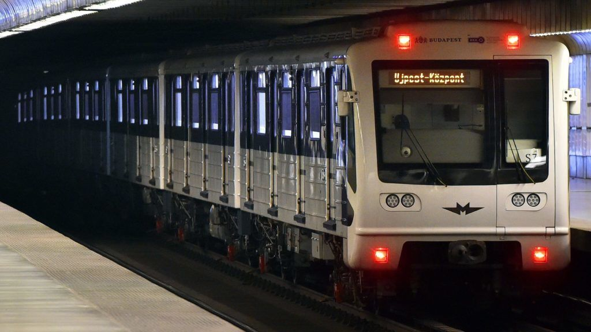
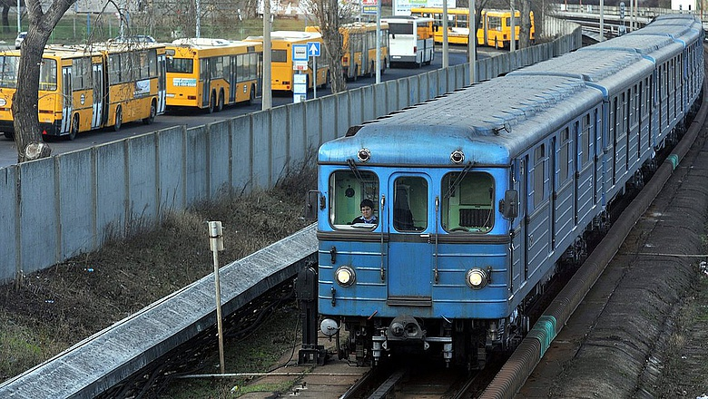
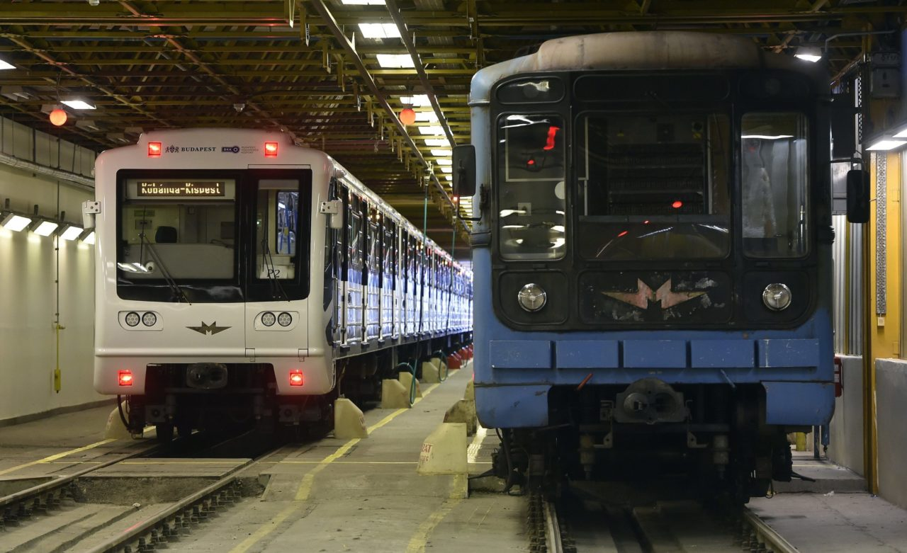

Az M3-as metróvonal
Az M3-as metróvonal a budapesti metróhálózat leghosszabb vonala, mely Kőbánya-Kispest és Újpest-központ között üzemel – a 2017-ben kezdődött felújítás ideje alatt korlátozottan. A Budapesten jelenleg működő metróvonalak főirányaira vonatkozó elképzelések nem új keletűek, már a földalatti vasút 20. század elején készült építési terveiben – és azt követően is – fellelhetők. Ez kézenfekvő, mivel a földalatti vasút javasolt nyomvonalai követték a forgalom, illetve az utasszállítási igény kialakult főirányát. A budapesti földalatti vasút építéséről 1950-ben hozott kormányhatározat már említést tesz az észak–déli vonal nyomvonaláról és építéséről is. Később, a kelet–nyugati vonal továbbépítését jóváhagyó 3428/1963. számú kormányhatározat már teljesen előírta az észak–déli metróvonal beruházási programjának elkészítését is. E határozat alapján 1966-ban elkészült az észak–déli, a mai M3-as vonal beruházási programjának tervdokumentációja.
A Határ úti metróállomás úgy épült meg, hogy onnan a vonal Kispest felé az Üllői út irányába bármikor továbbépíthető. Az M3-as vonal építése 1970-ben kezdődött meg; jelenlegi forgalmi hossza 16,3 km, építési hossza 17,3 km, állomásainak száma 20.
Története
A beruházási célban kitűzött nyomvonalként az újpesti István tér és a kispesti Vörös Csillag Traktorgyár közötti összeköttetés szerepelt. A program jóváhagyása során – elsősorban anyagi okok miatt – olyan döntés született, hogy a vonal Újpest, István tér és Kispest, Határ út között épüljön meg. A kitűzött határidő az 1985. év vége, a tervezett vonalhossz 14,8 km, az állomások száma 19 volt. A beruházási programot 1968-ban hagyták jóvá, az építés 1970-ben kezdődött el, és megszakítás nélkül folytatódott 1990 végéig.
Időközben a vonal déli végállomása a Határ úti csomópontból Kőbánya-Kispest MÁV-állomás mellé, az északi végállomás pedig Káposztásmegyerre került, mivel ott egy új városrész építését kezdték el. A vonal tervezett hossza ekkor 20,5 km-re, az állomások száma 24-re változott. A káposztásmegyeri lakótelepet már úgy tervezték, hogy ott a metróépítés számára a szükséges helyet szabadon hagyták. Budapest fejlesztésében ez lett volna az első eset, amikor egy új városrész tömegközlekedési feladatait a városrész építésével egy időben és összehangoltan megoldják. Az építés ideje alatt bekövetkezett gazdasági-politikai változások ezt végül megakadályozták. A vonal északi végállomása jelenleg Újpest-központban van. A tervezett Rózsa utca, Rákospalota-Újpest, és Szilas-patak metróállomások nem készültek el, de a felszíni pálya egy szakasza igen, ezt a 14-es villamos használja.
Járművek
A vonalon először Ev3, majd 1980-tól vegyesen Ev3 és 81–717/714 típusú szerelvények jártak. 2018 óta ezek felújított változata jár 81-717.2K/714.2K típusnév alatt.
Ezen a vonalon közlekedett 1991 és 1995 között a magyar gyártású Ganz-Hunslet G2 típusú prototípus metrószerelvény, ami sosem került sorozatgyártásra.
2013-ban felmerült, hogy a rendkívül rossz állapotban lévő szerelvények legalább egy részét lecserélik 2015-ig. Vita folyt arról, hogy új szerelvények kerüljenek-e beszerzésre, de végül az alacsonyabb beruházási költség miatt a korábbi szerelvének felújítása mellett döntöttek.
A felújítási projektre 2015 nyarán írták alá a szerződést a moszkvai polgármesterrel. A 222 kocsira a teljes összköltség 69 milliárd forint lett. 2016 januárjában elindult az első felújításra váró szerelvény Moszkvába. (Az utat nem Ukrajnán keresztül, hanem Szlovákián, Lengyelországon és Fehéroroszországon átkelve tette meg.) 2016 májusában megérkezett az első felújított szerelvény Budapestre, amely a próbák elvégzése és a típusengedély beszerzése után 2017. március 20-án, hétfő délután állt forgalomba. 2018 április 3-tól már csak felújított szerelvények járnak a vonalon.
Bár felújítási projektre írták ki a pályázatot, tulajdonképpen új szerelvények kerültek forgalomba, annyira kevés elemét lehetett csak felhasználni a régi metrókocsiknak.